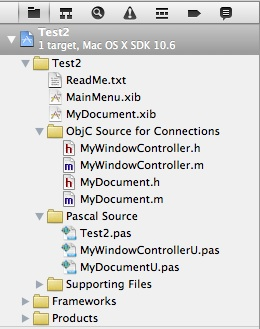
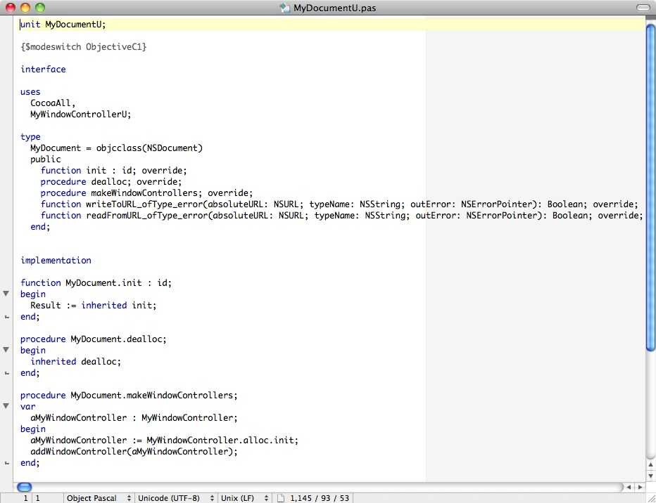
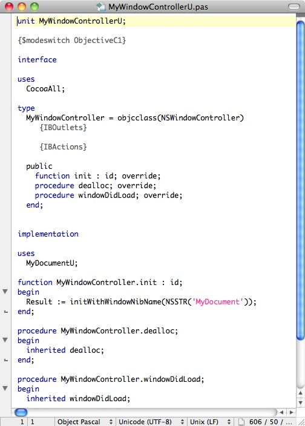

Windows addresses this problem with its multiple document interface (MDI) and single document interface (SDI). In MDI there is a single window and some way of switching between documents. In SDI each document is in a separate window that's activated via the Taskbar and looks almost like a separate instance of the app.
Another approach popular on both platforms is to use a tabbed or indexed window to handle multiple documents.
A "document" can contain virtually any kind of data and, when saved to disk, can encompass one or multiple files. For example, if you think of a project as being a document, then both Xcode and Dashcode would be considered document-based, although you might lose sight of this when working within a project since multiple files in the project folder can be opened at the same time. Delphi and Lazarus would not be considered document-based since they can only open one project at a time.
By splitting the "controller layer" into a "model controller" (NSDocument) and a "view controller" (NSWindowController), we ensure that the user interface doesn't get tangled up with the underlying document and provides a way that either subclass can be recycled in other apps with minimal changes.
Note that you can create a document-based Cocoa app by subclassing only NSDocument. However, Apple's overview suggests that dividing the responsibilities into two subclasses is the recommended approach "for all but the simplest cases." Interestingly, the Objective C template included with Xcode 4 does not do this, a case where Apple seems to be ignoring its own advice. But not to worry: the Pascal template automatically creates both subclasses so you don't have to do this manually.
It's also possible to have a third "mediating" controller that sits between the model and view controllers, but that's beyond the scope of this article.
Several of the files that the template creates are the same as in Part 1, but there are some differences, as noted below.
Figure 2-1. A document-based app's files.

ReadMe.txt - brief getting-started instructions for the new project.
MainMenu.xib - in Part 1 this file contained both the main menu and the main window; in a document-based app, this file contains only the menu.
MyDocument.xib - since multiple documents can be opened, each in its own window, the window layout is now in its own file, which is loaded each time a document is opened.
.h / .m files - Objective C placeholder files for creating connections; you make a connection by dragging a control's Outlet or Action to the MyWindowController.h header file.
Test2.pas - Pascal program file; same as in Part 1.
MyWindowControllerU.pas - Pascal window controller class.
MyDocumentU.pas - Pascal document class.
You can go ahead and compile and run your app (Product | Run), although it doesn't really do anything yet.
Figure 2-2. The default Pascal document class.

Our document subclass overrides five NSDocument methods. For more information on the NSDocument class, refer to Apple's documentation here. Note that although NSDocument is part of AppKit, it's a subclass of the root NSObject class.
Now add two additional methods to our document class for getting and setting the XML Name element, as well as fill in the overridden methods. You can just copy and paste the code from below into your own MyDocumentU.pas file using Xcode's code editor or an editor such as TextWrangler. The lines you need to add are highlighted in bold.
Figure 2-3. The finished Pascal document class.
unit MyDocumentU;
{$modeswitch ObjectiveC1}
interface
uses
CocoaAll,
MyWindowControllerU;
type
MyDocument = objcclass(NSDocument)
private
xmlDoc : NSXMLDocument;
public
function init : id; override;
procedure dealloc; override;
procedure makeWindowControllers; override;
function writeToURL_ofType_error(absoluteURL: NSURL; typeName: NSString; outError: NSErrorPointer): Boolean; override;
function readFromURL_ofType_error(absoluteURL: NSURL; typeName: NSString; outError: NSErrorPointer): Boolean; override;
function getName : NSString; message 'getName';
procedure setName(name : NSString); message 'setName:';
end;
implementation
function MyDocument.init : id;
var
err : NSError;
begin
Result := inherited init;
if Assigned(Result) then
begin
xmlDoc := NSXMLDocument.alloc.initWithXMLString_options_error(
NSSTR('<MyData><Name></Name></MyData>'), 0, @err);
if not Assigned(xmlDoc) then
begin
Result.release;
Result := nil;
end;
end;
end;
procedure MyDocument.dealloc;
begin
xmlDoc.release;
inherited dealloc;
end;
procedure MyDocument.makeWindowControllers;
var
aMyWindowController : MyWindowController;
begin
aMyWindowController := MyWindowController.alloc.init;
addWindowController(aMyWindowController);
end;
function MyDocument.writeToURL_ofType_error(absoluteURL: NSURL; typeName: NSString; outError: NSErrorPointer): Boolean;
begin
Result := xmlDoc.XMLData.writeToURL_options_error(absoluteURL, 0, outError);
if (not Result) and Assigned(outError) then
outError^ := NSError.errorWithDomain_code_userInfo(NSOSStatusErrorDomain, 0, nil);
end;
function MyDocument.readFromURL_ofType_error(absoluteURL: NSURL; typeName: NSString; outError: NSErrorPointer): Boolean;
begin
xmlDoc.release;
xmlDoc := NSXMLDocument.alloc.initWithContentsOfURL_options_error(absoluteURL, 0, outError);
Result := Assigned(xmlDoc);
if (not Result) and Assigned(outError) then
outError^ := NSError.errorWithDomain_code_userInfo(NSOSStatusErrorDomain, 0, nil);
end;
function MyDocument.getName : NSString;
var
err : NSError;
nodes : NSArray;
begin
Result := nil;
if not Assigned(xmlDoc) then
Exit;
nodes := xmlDoc.rootElement.nodesForXPath_error(NSSTR('Name'), @err);
if nodes.count = 0 then
Exit;
Result := nodes.objectAtIndex(0).stringValue;
end;
procedure MyDocument.setName(name : NSString);
var
err : NSError;
nodes : NSArray;
begin
if not Assigned(xmlDoc) then
Exit;
nodes := xmlDoc.rootElement.nodesForXPath_error(NSSTR('Name'), @err);
if nodes.count = 0 then
Exit;
nodes.objectAtIndex(0).setStringValue(name);
updateChangeCount(NSChangeDone);
end;
end.
The overridden init method now creates an XML object containing the minimum
XML needed for a new document, for example for use with a new document that was
not loaded from a file. This XML object is freed in the dealloc method.Note that much of the code is just error checking. It should be self-explanatory once you've familiarized yourself with the classes involved (NSXMLDocument, NSError, NSData, NSArray and NSXMLNode).
So now we have our document class, which can create, read and write our simple XML document files on demand as well as get and set a document's data.
Click MyDocument.xib in Xcode's Project navigator to display the blank window. First select and delete the dummy "Your document contents here" control. Then drag and drop a Text Field onto the window (review Part 1 if necessary). Now do two things:
Figure 2-4. The default Pascal window controller class.

As with the document subclass, our window controller subclass overrides several methods. For more information on the NSWindowController class, refer to Apple's documentation here.
The windowDidLoad method is called after the document is loaded, so we can add any custom UI code there for setting up the window.
Now add the Text Field's outlet declaration, one additional method, and a line of setup code to windowDidLoad. The code should now look like this, with the new lines in bold.
Figure 2-5. The finished Pascal window controller class.
unit MyWindowControllerU;
{$modeswitch ObjectiveC1}
interface
uses
CocoaAll;
type
MyWindowController = objcclass(NSWindowController)
{IBOutlets}
nameTextField : NSTextField;
{IBActions}
public
function init : id; override;
procedure dealloc; override;
procedure windowDidLoad; override;
function control_textShouldEndEditing(control: NSControl; fieldEditor: NSText): Boolean;
message 'control:textShouldEndEditing:';
end;
implementation
uses
MyDocumentU;
function MyWindowController.init : id;
begin
Result := initWithWindowNibName(NSSTR('MyDocument'));
end;
procedure MyWindowController.dealloc;
begin
inherited dealloc;
end;
procedure MyWindowController.windowDidLoad;
begin
inherited windowDidLoad;
nameTextField.setStringValue(MyDocument(document).getName);
end;
function MyWindowController.control_textShouldEndEditing(control: NSControl; fieldEditor: NSText): Boolean;
begin
MyDocument(document).setName(fieldEditor.string_);
Result := True;
end;
end.
A few notes and tips on this code:
/Developer/FreePascalCompiler/2.6.0/Source/packages/cocoaint/src/appkitThe Foundation files are here:
/Developer/FreePascalCompiler/2.6.0/Source/packages/cocoaint/src/foundation
It's hard to overstate how much you get "for free" via the Pascal template and the underlying Cocoa functionality. As an exercise, try implementing a similar app on any other platform using any other tool.
Note the number of menu commands in the app's menus. Some of these are not yet implemented. To extend this app, you could try adding the following:
macpgmr (at) fastermac (dot) net
First posted April 17, 2011; last edited Dec. 29, 2011.